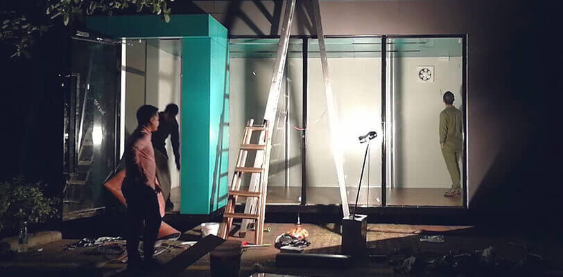

无人商店卡位战打响 EasyGo无人便利店投资人谈如何狩猎
从南方升起的无人便利店热度，有增无减。大小玩家、投资机构闻风而动，纷纷卡位和布局。更多的投资人选择观望和等待时机，而已经入场的投资人，他们现在又是怎样的心态，投资的逻辑在哪儿？
EasyGo 无人便利店的种子轮投资人文水彬，谈了谈他在无人零售店的商业判断和投资方法论。
文水彬并不是一位大众熟知的投资人，更多时候，他也是一位创业者，他是隐身在团队背后的 " 最强大脑 "，已成功创办与投资多家公司，涉及汽车后市场服务、音乐社区、游戏娱乐服务、3D 打印与纳米新材料等多个项目，一直坚持只投资熟悉的朋友创业项目。
为什么无人便利店会火起来？
在消费升级的趋势下，降低成本和提高效率，无人便利店刚好都满足了。
我认为消费升级有三个核心：产品方式的升级、生产供应方式的升级、终端渠道模式的升级。消费的核心是消费者本身，现在消费者的消费心理（需求）发生了根本性的变化，必然促使供给方的产品思维、商业模式也要发生改变，要用新的产品思维、新的生产供应方式、新的技术手段、以及新的渠道终端模式去满足新的消费需求。
第一，消费者对自我的认知越来越清晰，以前购物很多都是盲从心理，现在都有自己的消费观，所以要有不同的个性化的东西去满足不同消费观的人；第二个是人越来越懒，所以需要越来越便捷。
无人值守便利店并不是简单将传统的便利店变成一个简单的无人值守，而是从供应方式、用户体验的改变，用户的运营与管理等全面深入的发生变化。
以前，传统店面和用户并不发生连接关系，只是简单的买卖型消费，用户买完就走，并不知道用户是谁。
现在无人值守便利店终端通过与新支付方式、新的技术手段、新的用户社交工具连接，后台信息系统能力相结合，从而知道用户是谁，买过什么东西，喜欢什么产品等一系列消费行为沉淀下来，同时后续结合视频监控，头像扫描，人脸识别，积累大量消费行为数据，便于为用户提供更精准及时的 产品服务。
比如，我怎么知道用户对产品包装的评价好不好呢？今后我们可以统计出，同一个包装，有的人停留看了十秒钟，有人只停留了三秒钟，十秒钟的那个被我们发现在包装上看了很久，这就可以分析出产品的成功和失败之处。就是用这种方式去倒推背后的产品提供者，去改变他们的产品结构、包装、设计等。
便利店本身是一个产品。就像大家经常看到的那样，原有的店面都是这么开的，而现在设计方式、生产方式都要变了。可以预见，以 EasyGo 为代表的无人便利店会变成一种新型的店面，更多的满足用户个性化的需求，与传统店面并不是一种颠覆关系，而是一种共存相融的状态，无人值守模式是基于标准化需求满足的前提下，开创另外一种需求满足模式与新的渠道终端格局。

投资接地气的创业团队
目前无人便利店在资本市场比较火，这是一个好现象，虽然很多人一时还不能完全接受或看好，但关注度已经起来了，每个人都会有自已的投资思路与节奏，有些资本投资是有比较强的风口跟随心态，有的会有比较强的质疑精神，这都很正常。
现在这个阶段需要真正专业的价值投资者，风口有时只是一个标签并无多大实质意义，核心还是在于对产业的理解与判断，虽然大家都在讲价值投资，但是真正能做到的还是少，有时会比较功利。
在投资时需要深刻的去研究与认知产业，不能只停留在宏观层面，很多微观的东西，宏观看是没有意义的。要有宏观的思维，但不能只是依托于宏观的认识去做微观的事，需要深入细节。
既然无人便利店这条赛道没问题了，接下来就是看团队的落地执行力了。
无人便利店的团队首要是要接地气。无人便利店的前期开拓其实是一个非常苦逼的活、很多事情都是细活，这些细活需要一个接地气的团队才可以把细节做到极致，需要有这个耐性和韧劲坚持住，所以到最后能获胜的人一定不是急于求成的人，一定是扎扎实实把这些细活做好的团队。
团队的关键不在于背景有多高大上，而在于是否能把微观的事情一件件的做到位，并把握好发展节奏，另外我更看重多次创业的团队，最核心的一点就是对节奏的控制会有感觉，因为创业和带一个球队是同一个道理，球队最核心的不是有多么强的人，而是能在踢球的时候把节奏控制好，真正的强队永远是懂得控制节奏的队伍。
目前，我参与投资的 EasyGo 无人便利店团队就是这样的团队，我看准了他们沉稳接地气，可以坚持把一个细活细节做好做到极致。
我和 EasyGo 创始团队很熟，知道他们是什么样的人，无人便利店这个事情特别适合他们团队。首先这个团队很有个性，我认为他们做事有深度，我不需要一些飘在表面上的东西，而是需要能够沉到地底下能深深扎进去的态度，比如 EasyGo 的团队中有技术极客，他可能并不是名校毕业的，但是他有别人没有的东西，他的思维特别能钻，特别能用巧劲去解决别人难解决的问题，这种人很有杆杠思维。
技术人员有两种，一种是技术扎得特别深，还有一种是特别懂得用巧劲，我特别喜欢第二种，因为这样的人往往事半功倍。我们首先要知道，做一个事情正确的方法是怎么样的，在这个正确方法的前提下去选择有专业背景适合的人，把它做正确。我认为目前无人便利店领域 EasyGo 的团队非常务实优秀很有竞争力。
无人商店的进化
目前，赛道的这些玩家，除了巨头之外，还有一些刚起步的创业团队。有些选择了一开始就做加盟，做大规模，想跑出数据出来，也好融资，也有的在精耕细作，夯实上下游。
在我看来，在缺少一定数量的自营店之前，广泛铺开加盟可能导致店面管理混乱，用户体验下降，以及造成品牌损伤，特别是供应链的顺畅性和各区域的不同选品在没有经过测试之前，大量加盟是有风险的。
EasyGo 无人便利店目前正在扎实做自己的自营店，定位在小区里，最开始以中高端小区切入，比如和大型房地产商、大型物业合作，先沉下去。与此同时，把整个体验最大限度的提升上去，做好口碑积累。在这方面，EasyGo 有自己的优势，比如它不需要经过一个无人收银台，它的 RFID 码已经升级到了第三代，它的主打应用小程序会不断迭代开发出新的功能……这些都保证了整个流程体验的极简、顺畅和安全。
不久之后，EasyGo 自身的数据沉淀和分析应用，可以将传统零售行业的单线关系变成互动关系，这些对于行业来说，EasyGo 将有可能对整个零售行业的变化和新格局带去积极的影响和示范。
现在大家在说无人便利店时过于将关注点放在 " 无人值守 " 这个特性上，无人值守不会是一种简单的技术改变，后面将会更深层次的改变整个消费需求供应链条。
在我看来，便利店会经过四个阶段：1.0 阶段是便利店标准连锁化，目前就是在这个阶段，2.0 阶段可以叫智能化时代，3.0 可以叫智慧化时代，4.0 叫社区化时代。
智能化时代核心 " 能 "，通过融合新的技术手段改变便利店的经营模式，提升店面的运营效率与用户体验。智慧化时代核心是 " 懂 "，通过将消费行为数据及新能力的融合，变得越来越懂用户，社区化时代的核心是 " 连接 "，以店面为入口通过消费兴趣及消费行为建立线上线下结合的消费社区提升用户粘性与活跃度。
以前便利店就只是一个店，未来的便利店不只是一个店，不只是一种线下的物理空间，而是一个连接人与人及人与空间的节点，通过对用户消费行为的分析，运用社区化的手段。通过消费兴趣、位置信息、积分累积及用户等级等方式，产生连接体，通过线上系统进行消费数据与行为的汇集，产生一张蜘蛛网，每个店面只是这个网中的节点，打通每个店面的消费信息与用户连接。